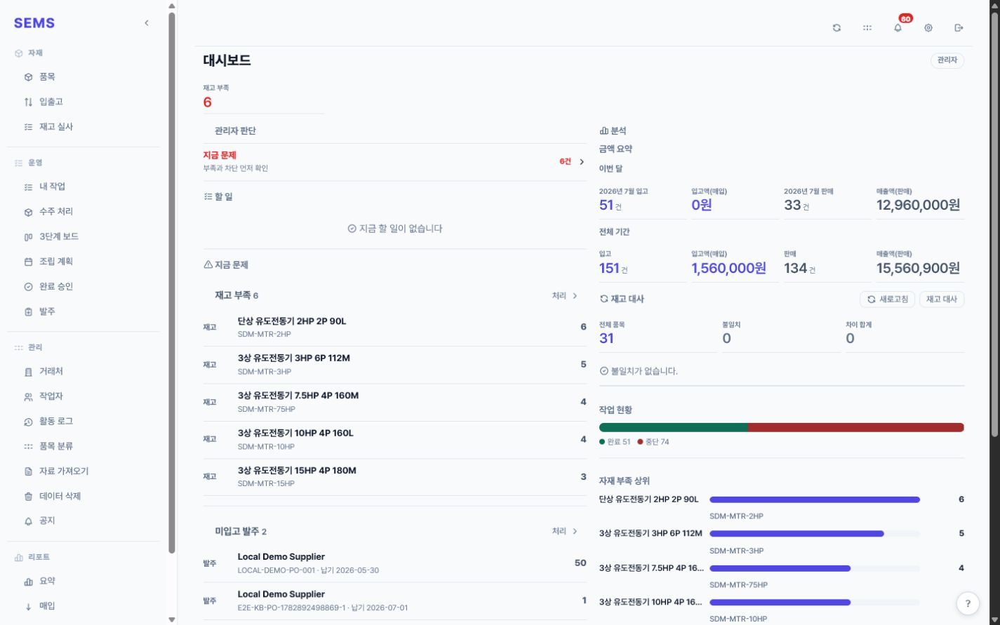
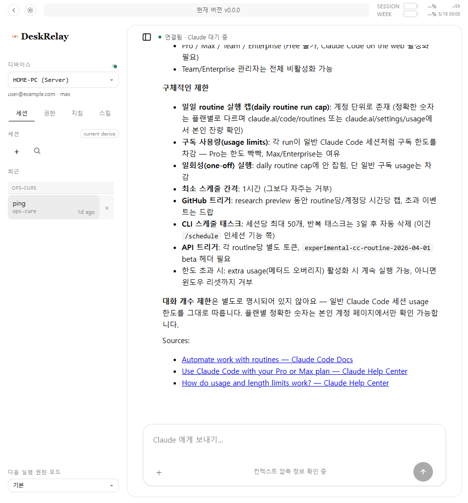

XR
Robotics
IK
VR Robot Teleoperation
Quest 3 입력을 Doosan A0912에 전달하고 이동 제한, 캘리브레이션과 사내 IK를 구현했습니다.
Industrial XR / Robotics
케이스 보기
전시, 공장과 건설현장에 납품한 VR, 로보틱스, BIM 런타임, 제조 ERP와 EditorWindow 작업입니다.
Unity 개발부터 장비 연결, 현장 설치, 시연 중 대응과 운영자 인계까지 맡은 작업입니다.
Quest 3 입력을 Doosan A0912에 전달하고 이동 제한, 캘리브레이션과 사내 IK를 구현했습니다.

비개발자 제작, 데이터 매핑, 디지털 트윈 운영을 위한 9개의 EditorWindow 도구.

수주, BOM, 자재, 생산, 승인, 출고를 역할별 작업대로 연결한 제조 현장용 ERP.

관람객을 인터뷰해 콘텐츠를 생성하고, 실제 운영 대시보드와 함께 구동된 XR 전시 시스템.

함정·건설·공장 안전 교육을 위한 VR 시뮬레이터 묶음.

커스텀 지오메트리 툴링, 상호작용 로직, 단면 분석을 갖춘 Unity BIM 런타임.

내 서버 PC 와 등록된 PC 에서 실행되는 Claude Code 를 브라우저에서 조작하는 GitHub 기반 self-host 도구.

로컬 Ollama NPC 대화와 규칙 기반 대화 그래프를 함께 구현했습니다.
공장과 건설현장을 방문해 장비를 조립하고 시스템을 설치했습니다. 공개 시연 중 생긴 문제를 바로 고치고, 운영자가 혼자 쓸 수 있을 때까지 인계했습니다.